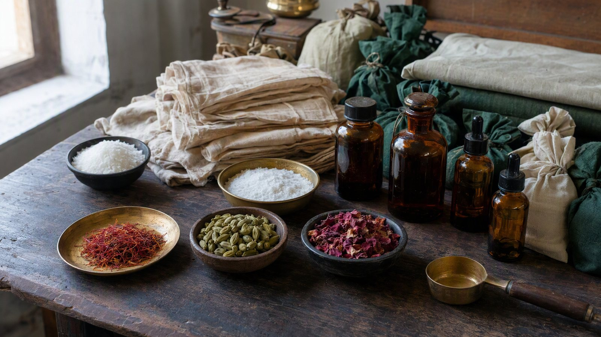
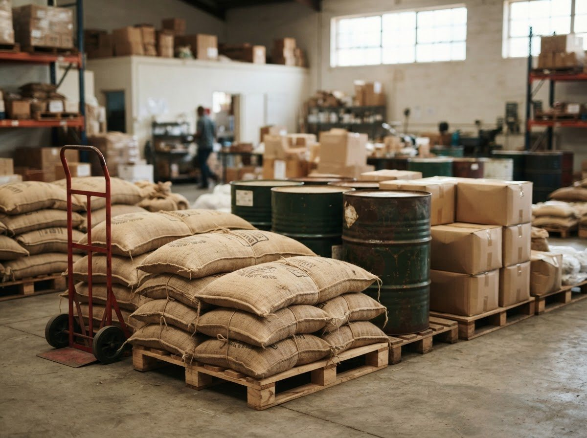
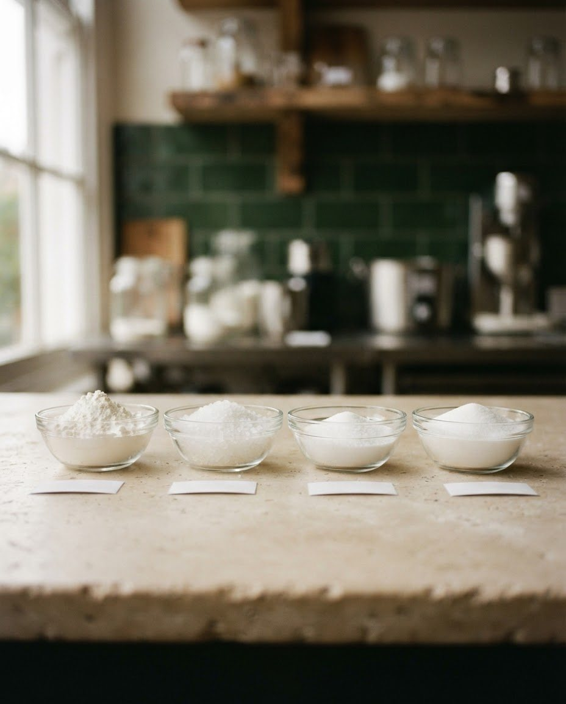
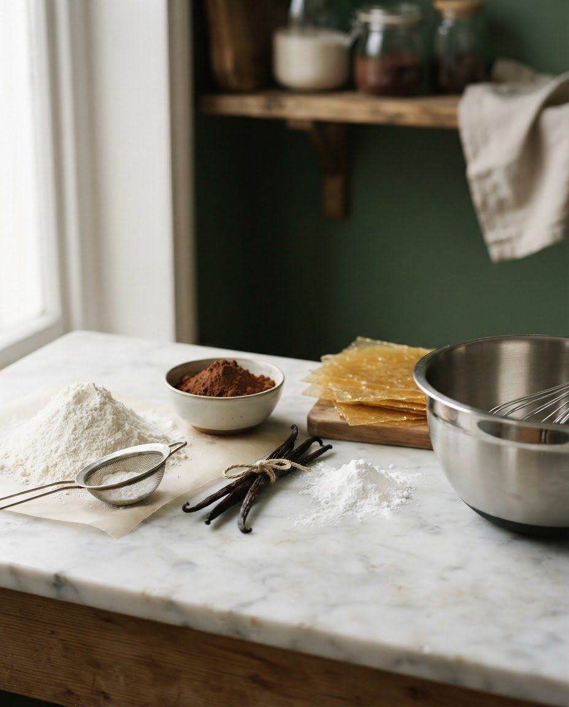
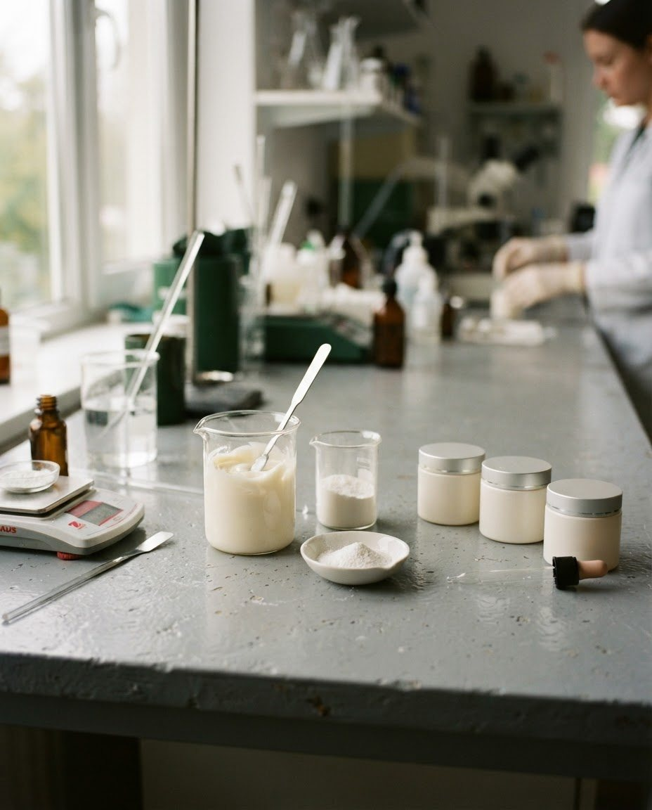
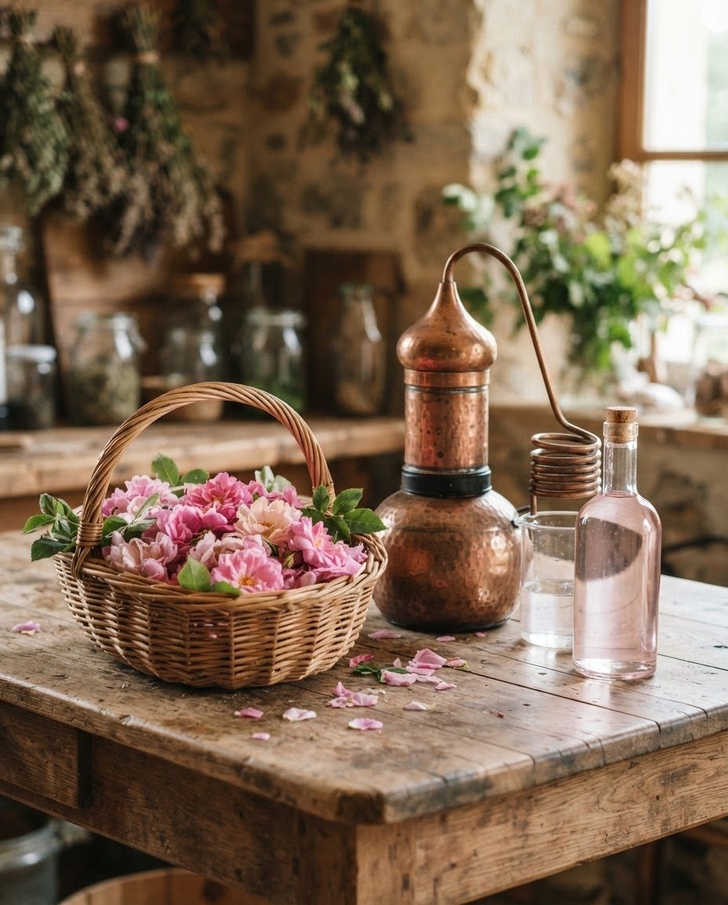
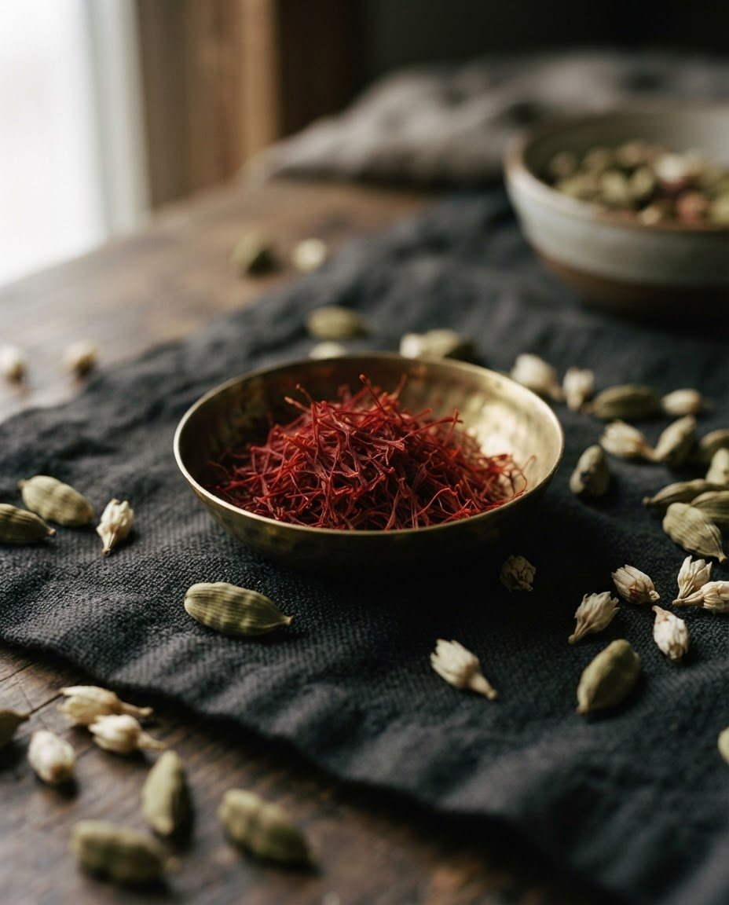
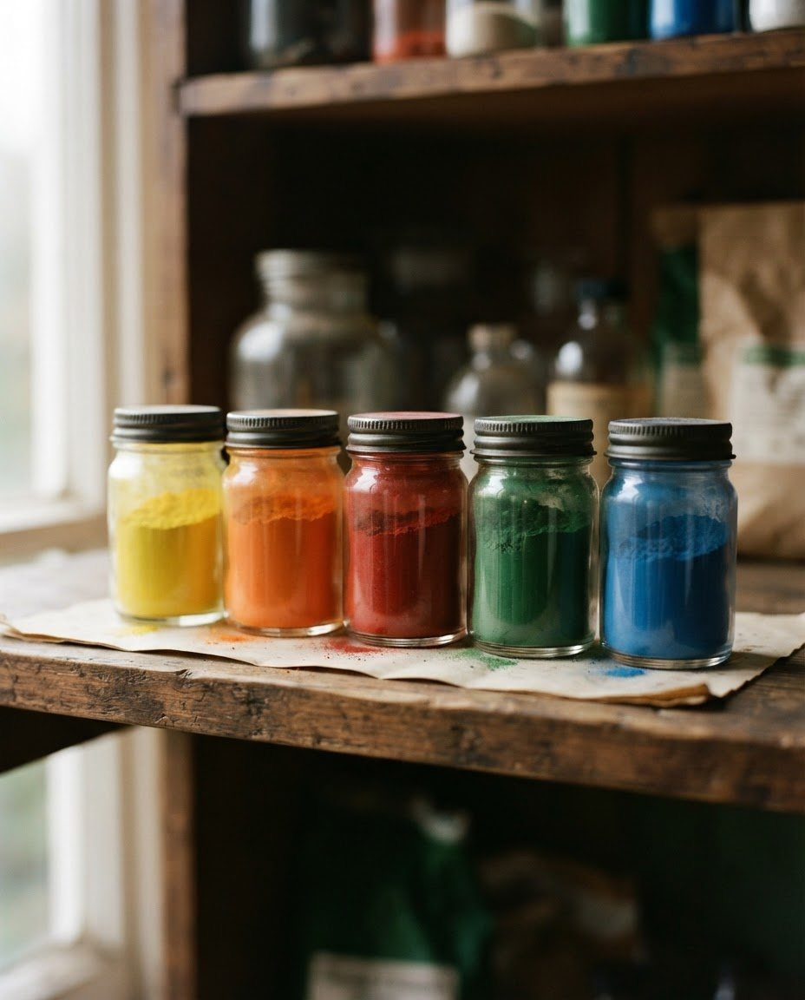

Tejas Trading · Kolkata
One Partner.Countless Raw Material Solutions.
With 25+ years of experience in the trade, Tejas Trading supplies a diverse range of raw materials to businesses across food, bakery & confectionery, Ayurveda, cosmetics, personal care, fragrance and allied industries. We also manufacture rose water, kesar (saffron) and kewra preparations, cardamom flavours, essential oils and perfumery compounds.
Domestic Trading Across India · Exports · Open to New Markets

25+ Years in the trade
What We Do
From ingredients to industry: we source what your business needs.
From natural ingredients and essential oils to food chemicals, cosmetic raw materials, colours, flavours and specialised industrial ingredients, Tejas Trading brings together a wide range of products under one roof. Alongside sourcing, we manufacture select lines ourselves: rose water, kesar and kewra preparations, cardamom flavours, essential oils and perfumery compounds.
Whether you manufacture food products, sweets, cosmetics, personal-care products, fragrances, Ayurvedic preparations or other finished goods, our aim is simple: to make your raw-material sourcing easier.
- Wide Product PortfolioA broad, evolving range across natural and industrial categories
- Reliable SourcingEstablished trade relationships built over 25+ years
- Competitive PricingBattery of suppliers, business-friendly terms
- Timely DeliveryOrganised supply for domestic orders and exports
Our Product Range
Key Product Categories
Ayurvedic & Natural Raw Materials
Herbs, roots, bark-based and botanical inputs for Ayurvedic and herbal product makers.
Explore
02Food Industry Raw Materials
Food chemicals and ingredients for processing and manufacturing units.
Explore
03Bakery & Confectionery
Ingredients and chemicals for bakeries, confectioners and sweet manufacturers.
ExploreEssential Oils & Fragrance Ingredients
Essential oils and perfumery compounds manufactured by us, with fragrance ingredients sourced through our network.
Explore
05Cosmetic Chemicals
Base chemicals and actives for cosmetic and skincare formulation.
ExplorePersonal Care Chemicals
Ingredients for haircare, skincare and daily-care product manufacturing.
Explore
07 Manufactured by usRose Water & Natural Ingredients
Our own distilled rose water, alongside natural inputs drawn from flowers and botanicals.
Explore
08 Manufactured by usKesar / Saffron & Natural Flavours
Kesar, kewra and cardamom preparations manufactured by us for foods, sweets and beverages.
Explore
09Food Colours & Dyes
Colour and dye inputs for food, confectionery and allied applications.
ExploreIndustries We Serve
Serving Diverse Industries
One sourcing partner across multiple industries and applications.
Food & Beverage
Ingredients & food chemicals
Bakery & Confectionery
Improvers, flavors, colours
Sweets & Traditional Foods
Kesar, flavours, colours
Ayurvedic & Herbal
Natural raw materials
Cosmetics
Base & active chemicals
Personal Care
Hair & skin-care inputs
Fragrance & Perfumery
Oils & aroma materials
Flavours & Ingredients
Cardamom, kewra & more
Chemical & Formulation
Industrial-grade supply
Other Manufacturing
Allied industries welcome
Our Experience
Experience you can source with.
Experience matters when you're sourcing the ingredients and raw materials that go into your products. Tejas Trading brings more than 25 years of experience in the trade, backed by a broad product portfolio and relationships across multiple categories.
Formally incorporated in Kolkata, we trade domestically across India and export to Nepal, with the same focus on reliability at either end. Enquiries from destinations beyond these markets are welcome and assessed on feasibility.
Why Tejas Trading
- One-Stop SourcingMultiple categories, one partner, one conversation.
- Wide Product NetworkSupplier relationships across natural and chemical ranges.
- Domestic & Export SupplyIndia-wide trading and established supply into Nepal.
- Business-Focused ServiceStraight answers, confirmed availability, practical support.
Markets & Exports
Serving India and Nepal, and open to more.
From domestic supply across India to exports to Nepal, Tejas Trading works with businesses looking for dependable sources of raw materials and ingredients. These are our established markets today, and enquiries from beyond them are welcome: tell us what you need and we will assess feasibility.
-
Domestic Supply
Trading across India: single categories or combined consignments, packed and dispatched to your unit.
-
Export Supply
Export supply to Nepal on confirmed orders, handled end to end.
Quality & Compliance
Quality-focused sourcing, dependable fulfilment.
Raw materials go into the food, cosmetics and personal-care products people use every day, so sourcing them calls for care. Tejas Trading stays focused on quality-checked inputs across every category it supplies.
FSSAI Licensed
Licensed for the food-grade raw materials we trade.
Quality-Focused Sourcing
Materials sourced through supplier relationships built over 25+ years.
Get In Touch
Looking for a Raw Material?
Tell us what you need. We'll help you find the right supply solution for domestic purchase or export.
For requirements, availability or pricing: call +91 75950 93613 / +91 98313 87357 or write tejastradingkolkata@gmail.com.
- +91 75950 93613
- +91 98313 87357
- tejastradingkolkata@gmail.com
- Kolkata, West Bengal, India